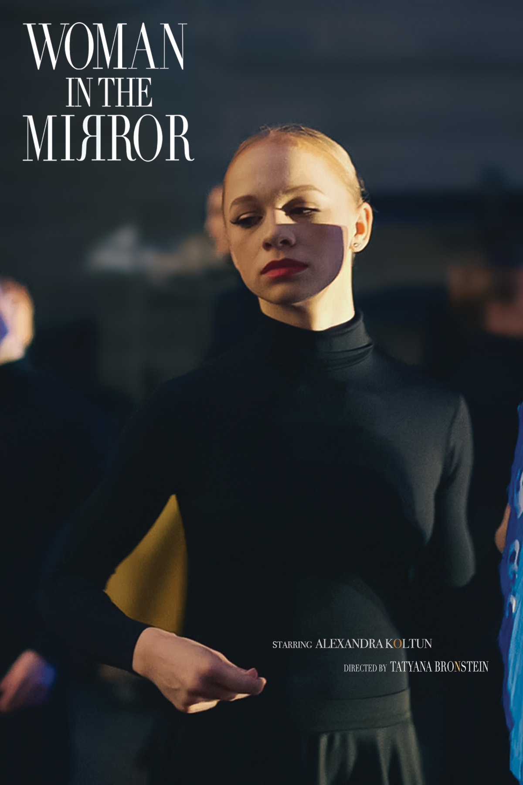
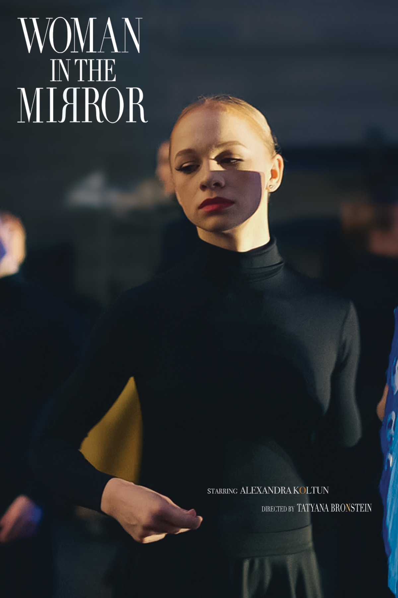

Cambridge, MA (July 2024) – Cambridge documentary film director and producer, Tatyana Bronstein, is proud to announce Woman in the Mirror!
Behind the Camera
Tatyana Bronstein
Director and Executive Producer
Cambridge, MA (July 2024) – Cambridge documentary film director and producer, Tatyana Bronstein, is proud to announce Woman in the Mirror!
Tatyana is an independent director/producer based in Boston, Massachusetts. She has directed feature documentaries and short narratives which have been shown at prestigious film festivals throughout the world.
Her films portray the daily lives of people, tell compelling, important stories, break stereotypes, present new opportunities. Her experience includes producing and directing films, writing screenplays and scripts, editing and cinematography, digital arts and interactive web design, as well as many years of teaching film and media at the college level. Her documentary "Prima" (2013) was shown at "Dance on Camera Festival" co presented with the Film Society of Lincoln Center and many other film festivals including 'InShadow, Voarte' - International Festival of Video, Performance and Technology, Lisbon, Portugal.
Her first feature length documentary, “From Russia, My Love” (2003) received considerable acclaim and multiple awards including “Best Ethnic and Cultural documentary” at the Worldfest Festival in Houston, Texas.
Her documentary, “PRIMA” (2013) has been screened in the 42nd Dance on Camera Festival at the Film Society of Lincoln Center and other film festivals throughout the world including 'InShadow, Voarte' - International Festival of Video, Performance and Technology, Lisbon, Portugal.
Her narrative short "Love Me Again" (2014), for which she wrote the script, directed and produced and edited, was screened at the film and dance festivals throughout the country including International Boston Film Festival. Poetically unveiling the emotions of Argentine Tango dancer, the film "Love Me Again" raises important issues of self-expression.
She is a recipient of 2016 Cambridge Arts Grant Program for her project “Make Me Dance”, a feature length cinema-verite documentary that takes an in depth look inside one of the most prestigious dance schools in the US, The Boston Conservatory students of Boston Conservatory. It was presented by Roxbury International Film festival at the Museum of Fine Arts in Boston.
Tatyana has an MFA in Media Art and a Master's degree in Visual Arts from Emerson College. She is a Lecturer at Boston University for the Department of Film & Television.
Nestled in a small New England town is a powerhouse of a ballet school. Its genesis includes the dramatic story of a prima ballerina defecting from the Soviet Union, her tenuous climb to personal and artistic freedom. In a story revealed in dance studio mirrors, Alexandra, a graduate of the prestigious Vaganova Academy and a driven ballerina is leading a diverse group of ballet students in their difficult journey to become professional dancers. Watch the trailer!
My films are about people, their emotional journeys and personal transformations. One of the most beautiful aspects of our lives is meeting interesting people, listening to their stories, and learning from the experience. I use a cinematic approach to filmmaking, hoping to bring a unique feeling to these stories.
The attempt to present stories as art, is at the core of what filmmaking is for me. Ordinary methods don't impress me. I believe in cinematic
intoxication, when the story transforms into art and allows me and my audience to escape. This visual world, which I create with cinematography, sound,
and music, is an important part of how I tell the story, hopefully, allowing my audience to experience the story in a personal manner. Art relies on the
dynamic, unifying quality of the human mind, which is why each of my films leave something to the imagination.
I choose my structures and visual styles to create a feeling, a mood, and engage the viewer.
Currently, I work in a form that is both art and documentary, an aesthetic alliance between
a cinema-verite and a poetic mode of representation. I
often search for free and expressive ways to communicate beyond an orderly and typical arrangement of
shots. Often, I experiment in developing a
connection through a juxtaposition of isolated sequences and shots that would give more meaning to the film and allow scenes to breathe on their own,
without infusing explanation, personal point of view, or direct manipulation.
My documentary camerawork portrays reality in a way that attempts to uncover the life present within a human mind, the emotion, simply to find a fragment
of a momentary truth. In opposition to my documentaries, surrealism is
the basis for my short narrative films. Dreams embrace the visual, aural, and
erotic forms within my narrative work, which freely exploits many experimental elements to tell a story symbolically. I am always seeking alternatives
to the linearity of narrative construction.
In my short narrative films I let reality and imagination merge into a visceral, cinematically beautiful
experience
Cinema is in our name.
Laugh. Cry. Feel.
Discover
Explore our work.
Kinochronika is thrilled to offer films for screenings at universities, museums, community centers, film festivals, and other organizations. We encourage all such institutions to join the appropriate mailing list at the bottom of this page to stay informed about new films available for booking and receive exclusive discounts.